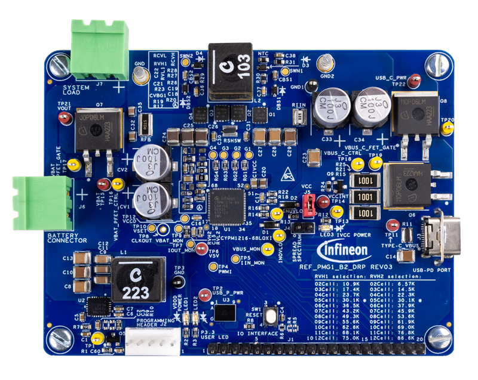

|
REF_PMG1_B2_DRP BSP
|
|
REF_PMG1_B2_DRP BSP
|
The REF_PMG1_B2_DRP Prototyping kit is a development platform to design products from the EZ-PD™ PMG1-B2 MCU is targeted at applications that require USB PD integrated battery charging up to 240 W for 2 to 12 cell battery, functioning as a USB PD Sink or USB PD DRP device and leverage the MCU to provide additional control capability.

To use code from the BSP, simply include a reference to cybsp.h.
The BSP has a few hooks that allow its behavior to be configured. Some of these items are enabled by default while others must be explicitly enabled. Items enabled by default are specified in the bsp.mk file. The items that are enabled can be changed by creating a custom BSP or by editing the application makefile.
Components:
Defines:
cybsp_register_custom_sysclk_pm_callback to register an application-specific callback.| Clock | Source | Output Frequency |
|---|---|---|
| CLK_HF | CLK_IMO | 48 MHz |
See the BSP Setttings for additional board specific configuration settings.
The REF_PMG1_B2_DRP Board Support Package provides a set of APIs to configure, initialize and use the board resources.
See the BSP API Reference Manual for the complete list of the provided interfaces.
© Infineon Technologies AG or an affiliate of Infineon Technologies AG, 2019-2026.